Incluir, excluir e restaurar páginas
1. Adicionar uma página
No Menu do guia, abaixo de Processo, clique em Adicionar página de fotos ou Adicionar página de rótulos. O Guia abre a página criada.
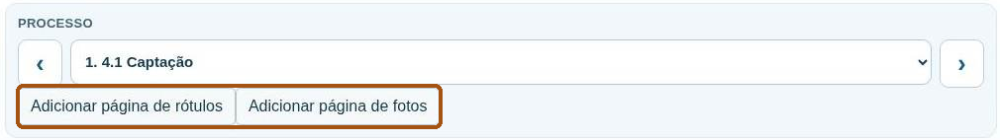
2. Excluir uma página de fotos ou de rótulos
Selecione a página no menu Processo. O botão de exclusão aparece abaixo do seletor quando a página estiver vazia. Nas páginas de fotos, os campos de identificação também precisam estar vazios. Depois de excluir, confira a sequência das páginas.
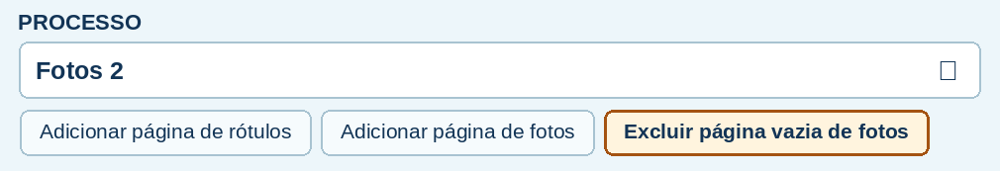
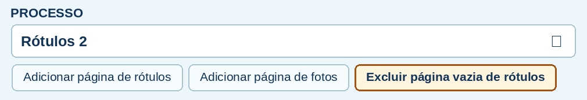
3. Excluir uma página de reservatórios sem uso
Selecione 4.3 Reservatórios da captação correspondente. Se a página estiver vazia e a captação estiver sem registro de uso, clique em Excluir página vazia de reservatórios e confirme. A página sai do seletor e do PDF gerado.
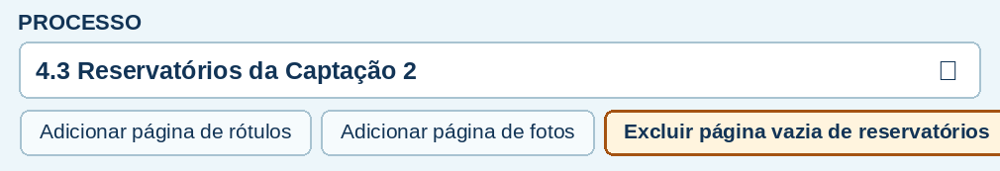
4. Restaurar páginas de reservatórios
Se houver páginas de reservatórios excluídas, o botão Restaurar páginas de reservatórios aparece no mesmo menu. Confira as páginas restauradas no seletor e salve o JSON.
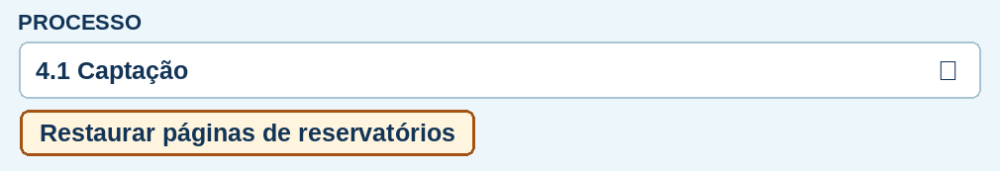
Imprimir relatório e anexar as frases F

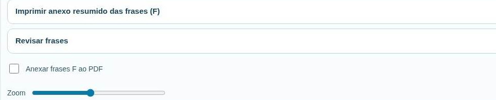
1. Conferir e salvar
Revise processos, NC, documentos, fotos, rótulos, matriz e responsáveis. Clique em Salvar arquivo para preservar o JSON consolidado.
2. Incluir o anexo no mesmo PDF
Em Mais opções, marque Anexar frases F ao PDF. Volte a Imprimir PDF no menu superior. O relatório reúne os registros da inspeção e acrescenta o anexo compacto das frases preenchidas. Confira se os itens esperados aparecem.
3. Imprimir ou encaminhar
Abra o PDF gerado, revise a paginação e selecione a impressora e o papel A4. Para ajustar um registro, corrija o guia pelo JSON e gere outro PDF.
Fechar e voltar ao sumário ↑Ajustes e conferência da impressão
1. Emitir o relatório preenchido
Clique em Imprimir PDF em Arquivos e relatórios. Em Mais opções, marque Anexar frases F ao PDF se precisar incluir as frases no relatório.
2. Baixar os formulários para uso em papel
Em Mais opções, escolha Imprimir guia em branco (18 páginas) ou Imprimir anexo resumido das frases (F).
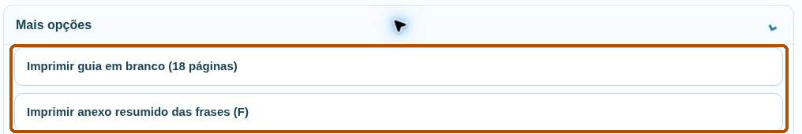
3. Conferir e corrigir o texto
Compare o PDF com o Guia e confira a última linha de cada registro. Verifique sobretudo as observações, sua continuação e as considerações finais, além das margens, fotos e rótulos. Se faltar espaço, separe os itens com Enter e transfira o excedente para Documentos e continuação das observações, citando o item de origem.
4. Gerar novamente
Salve o JSON, gere outro PDF e confirme que registros e imagens aparecem completos e legíveis. Confira a prévia em papel A4 antes de imprimir ou encaminhar.
Fechar e voltar ao sumário ↑Cópia de segurança e recuperação

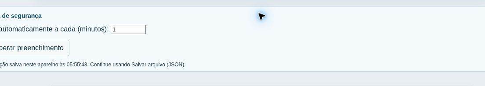
Salvamento automático e retomada
No Guia em equipe, a cópia automática registra as alterações cerca de três segundos após a última edição. Ao fechar e reabrir o Guia no mesmo navegador e aparelho, o último preenchimento salvo volta automaticamente. Confira a mensagem “Inspeção retomada” e os últimos registros.
Recuperar ou trocar de aparelho
Para escolher outra cópia local, abra “Cópia de segurança” e use “Recuperar preenchimento”. Em outro aparelho ou navegador, use o JSON exportado por “Salvar arquivo” e carregue em “Abrir preenchimento”.
Começar um novo Guia
Salve o JSON da inspeção atual. No menu superior, abra “Mais opções”, clique em “Novo / limpar tudo” e confirme. Inicie a nova inspeção com o Guia em branco. Ao apenas fechar e reabrir, o Guia em equipe retoma o último preenchimento salvo.
Guia em branco e Anexo F para papel

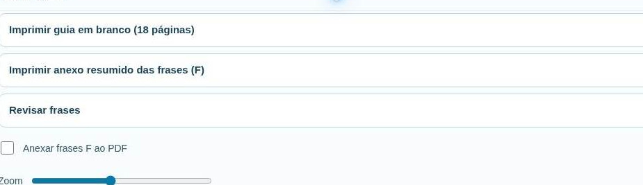
Guia de 18 páginas
Clique em Imprimir guia em branco (18 páginas). Abra o PDF baixado e confira a contagem e a legibilidade antes de imprimir. As pautas servem para anotar observações, considerações e responsáveis.
Anexo resumido das frases (F) de 10 páginas
O Anexo resumido das frases (F), de 10 páginas, apresenta frases simplificadas para facilitar a inspeção e a avaliação de cada item do Guia. Em Mais opções, selecione Imprimir anexo resumido das frases (F).
Quadro à esquerda. No quadro à esquerda, marque SIM ou NÃO para cada frase avaliada e preencha, no próprio quadro, as observações e as informações solicitadas.
Quadro à direita. No quadro à direita, registre todas as observações sobre os itens avaliados. Identifique cada registro pelo número do item e, quando aplicável, pela frase (F1, F2 etc.) e pela unidade avaliada.
Identificar os anexos
Quando os formulários forem usados em papel, identifique o anexo com a mesma inspeção do guia. Para inspeção digital, use a opção de incluir o anexo no relatório descrita na seção anterior.
Checklist de documentos e descritores
No Menu do guia → Mais opções, toque em CHECKLIST DE DOCUMENTOS e em Descritores dos documentos para baixar os PDFs separadamente. Abra cada arquivo baixado, escolha Imprimir no leitor de PDF e selecione a impressora.
Quando usar o checklist
Use o checklist para organizar os documentos da inspeção. Antes da visita, encaminhe uma cópia à envasadora para separar os documentos. Durante a inspeção, marque Entregue quando o documento for apresentado e Não possui quando a envasadora informar que não o possui. Se o documento existir, mas não for apresentado, registre a pendência no Guia.
Quando consultar os descritores e onde registrar a análise
Use os Descritores dos documentos para saber o que conferir em cada documento do checklist. Para os documentos entregues, registre a análise no Anexo resumido das frases (F) de 10 páginas ou diretamente no Guia de Avaliação de Risco, no item correspondente. A marcação Entregue indica o recebimento.
Fechar e voltar ao sumário ↑Trabalho em grupo: gerar e distribuir

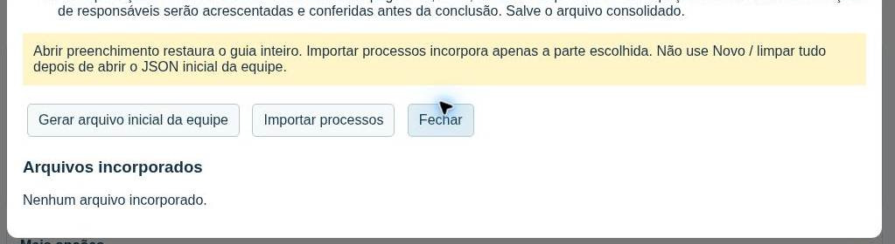
1. Preparar um único arquivo
Preencha envasadora, endereço, data e a identificação das unidades conhecidas. Abra Configurar equipe → Dados da equipe → Gerar arquivo inicial da equipe. Confira o código comum exibido no painel.
2. Distribuir e atribuir processos
Envie o mesmo JSON inicial e o endereço do app a todos os participantes. Defina quem avalia cada processo e quem consolida. Cada inspetor abre o JSON por Abrir preenchimento e registra sua parte.
3. Devolver os registros
Cada inspetor usa Salvar arquivo e devolve seu JSON ao responsável pela consolidação. Identifique os processos enviados e os anexos associados.
Manter a identificação original
Depois de distribuir o JSON inicial, não altere o nome da envasadora, o endereço nem a data da inspeção. Divergências nesses campos podem impedir a importação de arquivos sem o código da equipe.
Fechar e voltar ao sumário ↑Trabalho em grupo: importar e consolidar

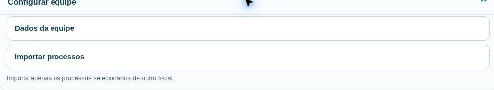
1. Preservar a versão de trabalho
Salve o JSON atual do responsável. Abra “Importar processos”, selecione os JSONs recebidos e confira a identificação na prévia.
2. Conferir a identificação da inspeção
Antes de incorporar, confira nome da envasadora, endereço e data com o arquivo inicial. Se houver divergência, peça ao colega que restabeleça a identificação original no Guia e envie o JSON salvo novamente. Todos devem usar o mesmo arquivo inicial e o mesmo código de equipe.
3. Selecionar e incorporar os registros
Marque os processos efetivamente preenchidos e, quando necessário, os anexos disponíveis. Autorize a substituição de um processo já preenchido apenas para a versão escolhida. Clique em “Incorporar processos selecionados”, revise o resultado, a matriz e os anexos, e salve o JSON consolidado.
Fechar e voltar ao sumário ↑Quadros de BPF
Onde olhar
Na parte superior da página do processo, localize a linha do item e leia a etiqueta com as siglas. As etiquetas reúnem as classificações das verificações daquele item. Abra o botão F para saber qual classificação corresponde a cada frase.
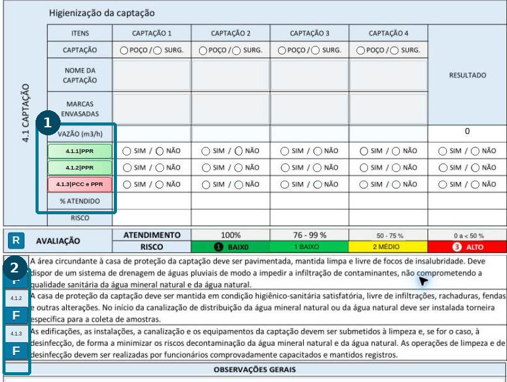
BPF, PPR e POP
BPF são as Boas Práticas de Fabricação. O PPR, Programa de Pré-Requisitos, reúne condições e práticas básicas, como conservação e limpeza das instalações. O POP, Procedimento Operacional Padronizado, descreve por escrito como executar e registrar uma rotina.
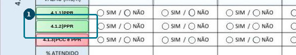
Como usar na inspeção
Siga a orientação ao inspetor e confronte a frase com o que foi verificado no local ou nos registros. Use a sigla da frase para identificar o tipo de controle. A resposta continua sendo registrada para a unidade avaliada.
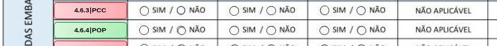
Quadros de APPCC
O que as siglas indicam
APPCC significa Análise de Perigos e Pontos Críticos de Controle. Na legenda do Guia, PC significa Ponto de Controle, PPRO significa Programa de Pré-Requisitos Operacional e PCC significa Ponto Crítico de Controle.
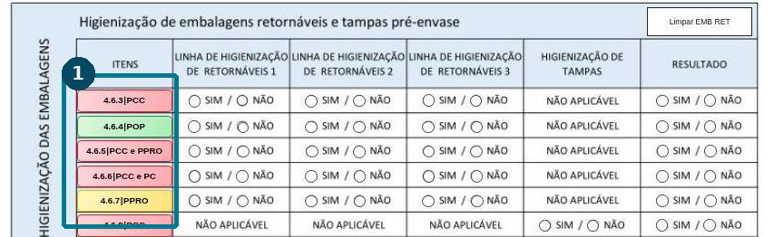
Como distinguir os controles
O PC indica um ponto em que se verifica uma condição de controle. O PPRO é uma medida operacional para controlar um perigo significativo. O PCC é uma etapa em que o controle é essencial e o atendimento é verificado por limite crítico mensurável ou observável.
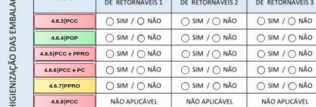
Quando o item traz mais de uma sigla
A etiqueta do quadro superior reúne as categorias do item. Abra F e veja a classificação ao lado do título da frase ou nas verificações dentro do bloco. A legenda usa verde para PPR/POP, amarelo para PC/PPRO e vermelho para PCC. Quando há mais de uma categoria, a cor acompanha a mais crítica.
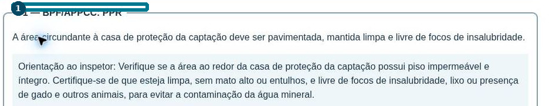
Quando uma frase PCC recebe Não
Registre a não conformidade e confirme qual frase e unidade originaram o resultado. Consulte o capítulo do cálculo e o botão R para localizar o motivo do risco alto.
Fechar e voltar ao sumário ↑Botão F: abrir, responder e registrar


Abrir o item correto
Selecione o processo. Identifique captação, reservatório, linha ou apresentação. Clique em F ao lado do número do item. Percorra F1, F2, F3, F4 e as demais frases que estiverem disponíveis.
Consultar orientações e exemplos
Leia Orientação ao inspetor. Quando recolhida, expanda Orientações ao inspetor. Abra Exemplo de preenchimento — Sim (OBS) ou Não (NC) quando disponível. Adapte o exemplo ao que foi efetivamente observado.
Salvar a avaliação
Marque cada verificação aplicável. Use Não se aplica quando oferecido e justificado. Em OBS, registre a evidência pertinente. Em NC, registre o desvio e sua localização ao marcar Não. Complete as respostas exigidas, clique em Salvar e fechar e confira o item.
Fechar e voltar ao sumário ↑Como ler a classificação em F1, F2 e F3
Abra o item
Selecione o processo e clique no botão F da linha. O painel mostra os blocos disponíveis: F1, F2, F3 e outros, conforme o item. Percorra os blocos na ordem exibida.
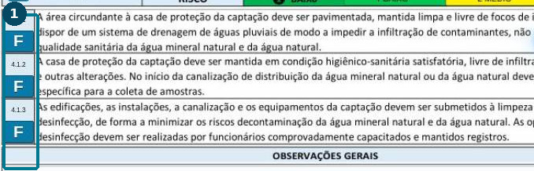
Leia uma frase de cada vez
Em cada bloco, leia o enunciado, a sigla BPF/APPCC e as orientações. Se o bloco agrupar verificações, confira também a classificação indicada em cada verificação quando houver mais de uma sigla.
Exemplo ilustrativo
Leia o cabeçalho de F1 e role para localizar F2 e F3, quando disponíveis. Por exemplo, um item pode reunir F1 como PPR, F2 como PPRO e F3 como PCC. A etiqueta no quadro superior lista as siglas do item. Dentro do F você identifica qual frase corresponde a cada categoria.
Exemplo de leitura. As siglas variam conforme o item e a frase.
Responda e salve
Confira a unidade ou linha da frase, marque a resposta que corresponde à evidência e registre a OBS ou a NC quando couber. Conclua as verificações exigidas e use Salvar e fechar.
Fechar e voltar ao sumário ↑Anexar foto dentro do F e identificar o local
Escolha a resposta e a unidade
Com o item F aberto, marque Sim ou Não. Para anexar uma foto a uma resposta Não, preencha a não conformidade. Na caixa Foto do F (SIM ou NÃO), escolha a combinação de frase, unidade e resposta que corresponde à imagem.
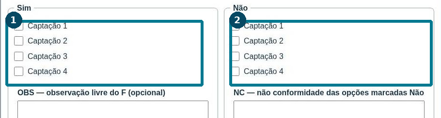
Confira processo, grupo e local
O processo vem do item aberto. A unidade vem da opção selecionada, como Captação 1, Condução 2, Reservatório 1, Reservatório 3 ou Linha 2. Em reservatórios, confira também a página da captação correspondente. Exemplo: Reservatório 1 da Captação 3.
Anexe e complete a identificação
Toque em Anexar fotos do F e selecione a imagem. Nas páginas Fotos, o Guia preenche o processo e identifica item, frase, unidade e resposta. Complete Local / equipamento / identificação com o ponto que aparece na imagem, como a descarga inferior do Reservatório 1 da Captação 3.
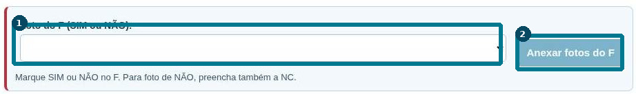
Confira a legenda
Um registro pode ficar assim: 4.3 Reservatórios | Item 4.3.3, F1, Reservatório 1, NÃO | Captação 3, descarga inferior. Mantenha o item e a frase na identificação ao acrescentar o local.
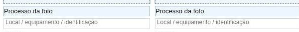
Registrar fotos enquanto responde aos itens
Anexe no momento da verificação
Ao avaliar o item, abra F, responda à frase da unidade vistoriada e anexe a foto enquanto o painel está aberto. O Guia envia a imagem às páginas Fotos e já registra a ligação com a resposta.
Repita para a frase ou unidade seguinte
Se a primeira foto for de F1 da Captação 1 e a próxima for de F2 da Captação 2, mude a opção da caixa Foto do F antes de anexar a segunda imagem. Quando selecionar várias imagens de uma vez, use imagens da mesma frase, unidade e resposta, pois elas recebem a mesma identificação.
Feche e siga a inspeção
Confira a mensagem de inserção, complete as demais verificações e use Salvar e fechar. Repita a operação no próximo item que precisar de evidência fotográfica.
Revise as evidências
Ao final, confira nas páginas Fotos a legibilidade da imagem, o processo e o local. Salve o JSON e verifique a identificação das fotos no PDF da inspeção.
Fotos e rótulos
1. Inserir uma foto e identificar a evidência
No seletor Processo, escolha Fotos 1 ou Fotos 2. Clique em Adicionar imagem, selecione o arquivo e preencha Processo da foto e Local / equipamento / identificação. Na OBS ou NC, indique o número da foto, o item, a unidade e o que a imagem demonstra. Para anexar pelo F, veja as páginas 14 e 15.
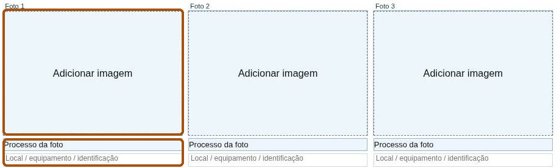
2. Recortar o rótulo antes de inserir
Selecione Rótulos 1 ou Rótulos 2, clique no quadro e escolha a imagem. Na janela Recortar foto do rótulo, ajuste as bordas Esquerda, Direita, Superior e Inferior pela prévia. Use Restaurar bordas se precisar recomeçar o recorte. Confira se produto e apresentação estão visíveis e clique em Inserir rótulo.
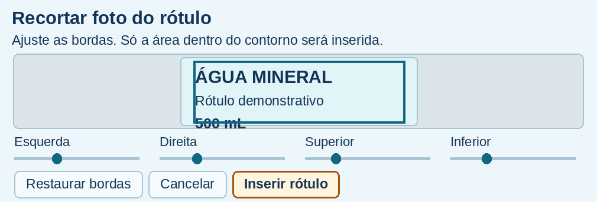
3. Girar ou retirar uma imagem já inserida
Use Girar 90° no próprio quadro da foto ou do rótulo. Repita até a imagem ficar na posição correta. Para apagar a imagem, clique em Retirar foto ou Retirar rótulo. Ao retirar a foto, o Guia também limpa a identificação daquele quadro. Salve o JSON e confira as imagens no PDF.
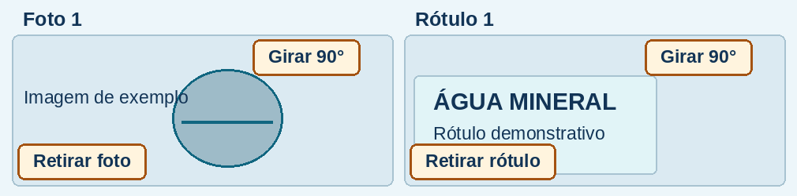
4.1 Captação

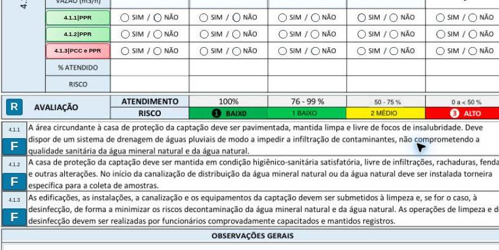
Preenchimento
Identifique o estabelecimento no cabeçalho. Registre o tipo e o nome da captação, as marcas e a vazão quando solicitados. Abra os F em cada item e avalie cada captação pela coluna correta.
Exemplo de observação
Captação 1. Entorno pavimentado e drenagem sem obstrução visível durante a vistoria.
Exemplo de não conformidade
Captação 1. Acúmulo de água no entorno imediato da casa de proteção.
Conferência antes de avançar
Confira se cada achado aponta para a captação correta e se a matriz poderá identificar a fonte.
Fechar e voltar ao sumário ↑4.2 Condução

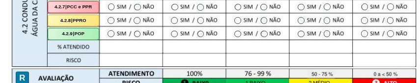
Preenchimento
Identifique a condução vinculada à captação. Abra os F dos itens para avaliar tubulações, registros de higienização e os demais critérios apresentados.
Exemplo de observação
Condução 1. Trajeto identificado no fluxograma e no trecho acessível da tubulação.
Exemplo de não conformidade
Condução 1. Ramal observado não identificado no fluxograma apresentado.
Conferência antes de avançar
Confira a ligação com a captação e a correspondência entre documentação e instalação.
Fechar e voltar ao sumário ↑4.3 Reservatórios

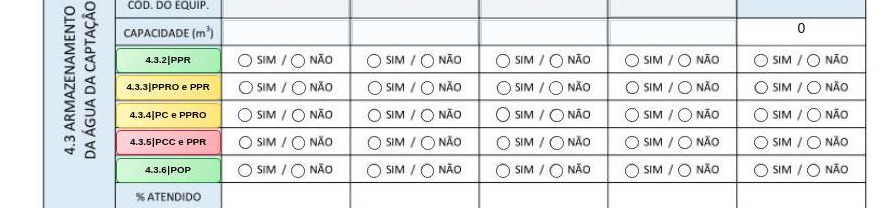
Preenchimento
Escolha no seletor Reservatórios da Captação 1, 2, 3 ou 4 conforme a instalação. Identifique o reservatório e abra os F para conferir os dispositivos, a conservação e os registros aplicáveis.
Exemplo de observação
Reservatório 2. Registro de higienização contém a identificação do equipamento.
Exemplo de não conformidade
Reservatório 2. Não foi apresentado o registro de higienização do período solicitado.
Conferência antes de avançar
Revise a associação entre reservatório e fonte. Registre separadamente os achados que se aplicam a unidades distintas.
Fechar e voltar ao sumário ↑4.5 Recepção de embalagens e insumos

Preenchimento
Escolha a coluna correspondente a garrafões retornáveis, embalagens descartáveis, rótulos ou saneantes. Abra o F do item e confira lote, critério de recebimento e evidência disponível.
Exemplo de observação
Embalagens descartáveis. Lote da amostra coincide com o registro de entrada.
Exemplo de não conformidade
Saneante em uso. O lote observado não consta no registro de recebimento apresentado.
Conferência antes de avançar
Verifique se cada resposta está na coluna correspondente ao material avaliado.
Fechar e voltar ao sumário ↑4.6 Higienização de retornáveis

Preenchimento
Informe a linha e a apresentação. Abra os F referentes às operações, equipamentos e registros indicados, incluindo embalagens e tampas quando forem objeto do item.
Exemplo de observação
Linha 1. Registro apresentado identifica o equipamento e o turno avaliado.
Exemplo de não conformidade
Linha 1. O registro do turno não contém a verificação prevista no procedimento da lavadora.
Conferência antes de avançar
Confira se o desvio descreve o controle ausente e se as evidências estão vinculadas à linha.
Fechar e voltar ao sumário ↑4.6 Higienização de descartáveis

Preenchimento
Selecione a linha e identifique a apresentação. Abra cada F e confira quais verificações se aplicam à embalagem da linha.
Exemplo de observação
Linha 2, copos. Procedimento apresentado identifica a apresentação avaliada.
Exemplo de não conformidade
Linha 2. O registro apresentado omite a verificação operacional prevista para essa apresentação.
Conferência antes de avançar
Use Não se aplica quando o F oferecer essa opção e a condição observada justificar.
Fechar e voltar ao sumário ↑4.7 Envase de retornáveis

Preenchimento
Selecione a linha de retornáveis. Abra os F e avalie as condições da sala, o equipamento, a operação e as práticas dos manipuladores conforme as frases disponíveis.
Exemplo de observação
Linha 1. Lavatório acessível e insumos disponíveis na vistoria.
Exemplo de não conformidade
Linha 1. Lavatório de acesso à sala de envase sem meio de secagem das mãos.
Conferência antes de avançar
Confira se a OBS ou a NC identifica o ambiente e a linha.
Fechar e voltar ao sumário ↑4.7 Envase de descartáveis

Preenchimento
Selecione o envase de descartáveis e a linha correta. Abra cada F e avalie o ambiente, o equipamento e os demais controles aplicáveis à apresentação.
Exemplo de observação
Linha 2. Porta da sala de envase mantida fechada durante a operação observada.
Exemplo de não conformidade
Linha 2. Abertura na passagem da linha permaneceu aberta durante a operação observada.
Conferência antes de avançar
Confirme a apresentação, a evidência e o momento em que o achado foi constatado.
Fechar e voltar ao sumário ↑4.10 Controle da qualidade

Preenchimento
Abra os F e avalie separadamente implementação e documentação, controle interno e externo, periodicidade, laudos e medidas diante de desvios conforme o item. Identifique fonte, apresentação, lote, data e laboratório quando cabível.
Exemplo de observação
Laudo apresentado identifica a fonte, a apresentação e o lote selecionados.
Exemplo de não conformidade
O laudo apresentado não permite vincular o resultado ao lote selecionado.
Conferência antes de avançar
Se usar a transferência de observações, confira a referência no item e a íntegra do texto na página de documentos e continuação.
Fechar e voltar ao sumário ↑4.11 Responsáveis e manipuladores

Preenchimento
Abra os F para conferir supervisão, capacitação, responsável técnico e certificados conforme as verificações disponíveis. Identifique comprovante, data, carga horária e função quando pertinentes.
Exemplo de observação
Certificado apresentado com identificação, carga horária e data.
Exemplo de não conformidade
Não foi apresentado o comprovante referente à capacitação da função avaliada.
Conferência antes de avançar
Confira a relação entre o documento apresentado e a pessoa ou função avaliada.
Fechar e voltar ao sumário ↑Documentos e continuação das observações

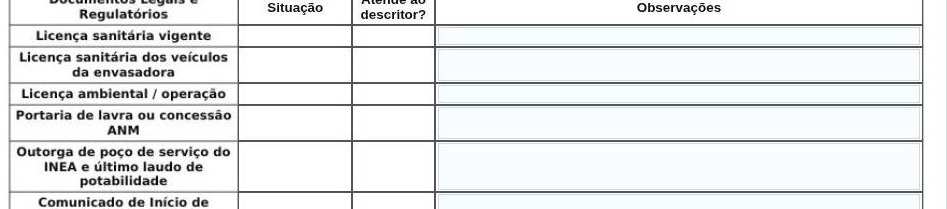
Preencher cada linha
Identifique o documento exigido na tabela. Preencha Situação conforme o que foi apresentado e Atende ao descritor? de acordo com o exame. Em Observações, registre número, emissor, validade, escopo e a divergência encontrada quando aplicável.
Exemplos de registro
Documento apresentado e válido: informe número, órgão emissor e data de validade. Documento apresentado com pendência: explique qual dado ou atividade ficou sem comprovação. Para certificado do cilindro em uso, quando aplicável, confira a identificação do cilindro observado.
Verificar a continuação
Revise observações transferidas ou complementares. Use o número do item e a origem do registro para localizar o texto na versão impressa.
Fechar e voltar ao sumário ↑Resultados: não conformidades e matriz


Onde aparecem as não conformidades
Consulte Observações gerais e Observações gerais — continuação das não conformidades. O guia agrupa os registros em críticas (PCC), maiores (PPRO e PC) e menores (POP e PPR), conforme a classificação da frase não atendida. Volte ao F de origem para corrigir eventual divergência.
Como interpretar os resultados
A matriz consolida os resultados dos processos preenchidos. Confira a identificação da inspeção, das unidades e dos registros consolidados. Os resultados refletem os itens efetivamente avaliados. Revise pendências e os totais antes de usar a classificação final.
Fechar e voltar ao sumário ↑Cálculo automático da porcentagem e do risco
Como o Guia calcula o percentual
O Guia consolida as respostas das frases no item e atualiza o quadro de avaliação da unidade. Se uma frase da unidade recebe Não, o item fica como Não. Nos quadros de atendimento, o Guia divide a soma dos itens atendidos pelo total considerado naquele quadro e multiplica por 100. O tratamento de NA depende da regra do quadro.
Faixas do percentual de atendimento
Abaixo de 50%: ALTO. De 50% a 75%, inclusive: MÉDIO. Acima de 75%: BAIXO. A matriz consolida a classificação dos processos e considera o maior risco entre as unidades avaliadas.
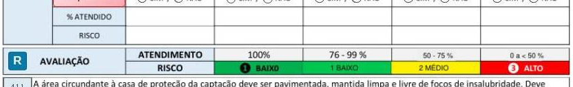
ALTO pelo percentual
Exemplo: em uma unidade com 3 itens considerados, 1 atendido e 2 não atendidos, o quadro mostra 33%. Sem PCC descumprido, o risco é ALTO pela faixa de atendimento.
ALTO – PCC mesmo com percentual elevado
Exemplo: de 6 itens considerados, 5 atendidos resultam em 83%. Se a frase não atendida é um PCC, a regra do Guia prevalece e o quadro sinaliza ALTO – PCC. O percentual continua mostrando o atendimento calculado.
Onde conferir
Compare a porcentagem com o rótulo de risco no quadro do processo e na matriz. Use o botão R para consultar a regra e localizar a frase PCC não atendida.
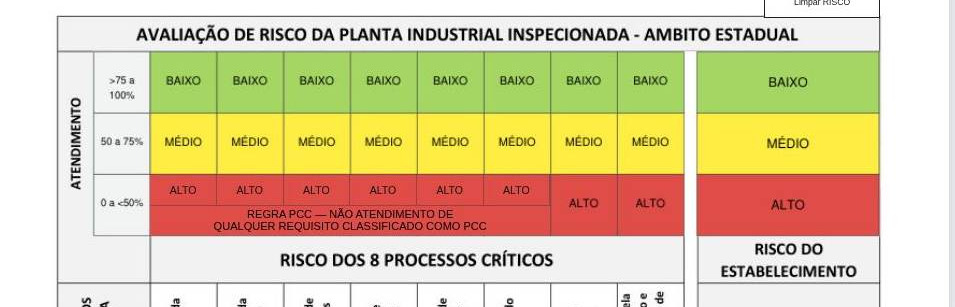
Botão R e alto risco por PCC

Consultar a regra
Clique em R quando aparecer nos quadros de avaliação ou risco. Leia a explicação e confira os itens PCC listados para o processo. A matriz reúne as classificações resultantes da inspeção.
Conferir a origem do alto risco
Se uma frase classificada como PCC estiver não atendida, o guia aplica a regra de alto risco ao processo ou à unidade correspondente. O PCC está relacionado ao controle de um perigo significativo. Ao encontrar ALTO - PCC, volte ao F e confira a resposta, a unidade e a evidência registrada.
Redigir os considerandos
Nos considerandos sobre risco, identifique o processo, a unidade e o PCC associado ao desvio, quando houver. Explique o fato que sustenta a leitura da matriz. Inclua outros achados relevantes quando necessários à conclusão e separe ali a fundamentação das medidas registradas.
Fechar e voltar ao sumário ↑Ações, medidas e responsáveis

Considerações finais / avaliação de risco
Resuma as constatações, identifique os PCCs que fundamentam a classificação quando aplicável e indique o encaminhamento. Em medidas adotadas, registre o que ocorreu na inspeção e no encaminhamento, incluindo identificação do ato e data quando disponíveis.
As duas frases previstas no guia
Com NC registrada, o guia prevê “O estabelecimento deverá sanar todas as não conformidades registradas no Guia de Avaliação de Risco Sanitário.” e “A Vigilância Sanitária Municipal adotará as medidas sanitárias cabíveis.” A primeira indica a obrigação de correção e a segunda, o encaminhamento à vigilância municipal. Confira a redação na conclusão e registre separadamente as medidas efetivamente adotadas.
Identificar os responsáveis
Preencha Responsáveis pela inspeção com nome e identificação funcional, conforme o campo e o procedimento da equipe. Em Responsável pela empresa, identifique a pessoa e sua função. Se quem acompanhou a inspeção for representante, indique essa condição e confira o responsável legal com o documento pertinente.
Fechar e voltar ao sumário ↑Instalar o app e salvar nos favoritos

Instalar no computador
Abra a página inicial no Chrome. Clique em Instalar Guia BPF/APPCC e confirme quando o navegador oferecer a instalação. Pelo menu do Chrome, procure Instalar página como app. Em alguns navegadores há também um ícone de instalação na barra de endereço.
Salvar como favorito no computador
Na página inicial, clique na estrela à direita da barra de endereço do Chrome ou use Ctrl+D no Windows/Linux ou ⌘+D no Mac. Escolha a pasta e confirme. Para voltar ao guia, abra o favorito salvo.
Instalar no celular
Abra a página inicial no Chrome para Android e use o botão de instalação ou o menu de três pontos para adicionar à tela inicial. A opção exibida depende da versão do navegador.